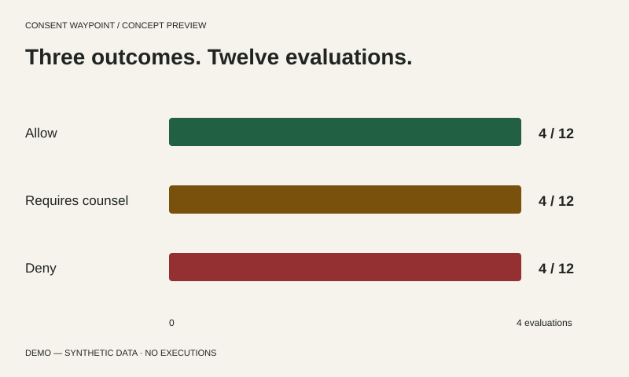
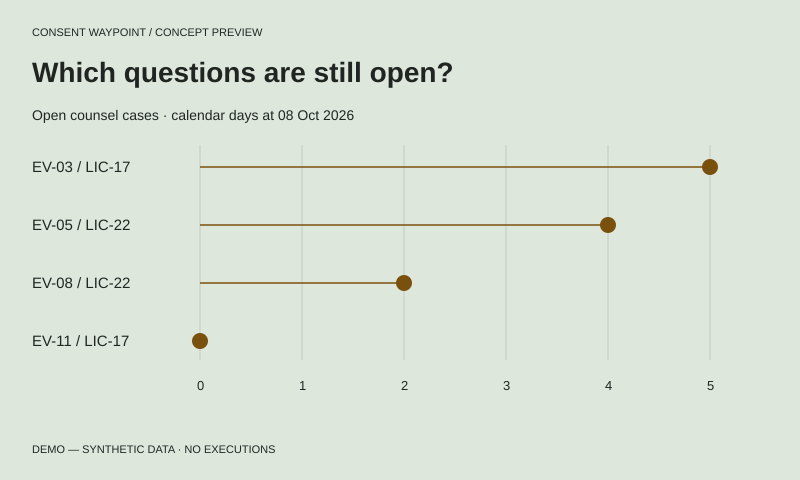
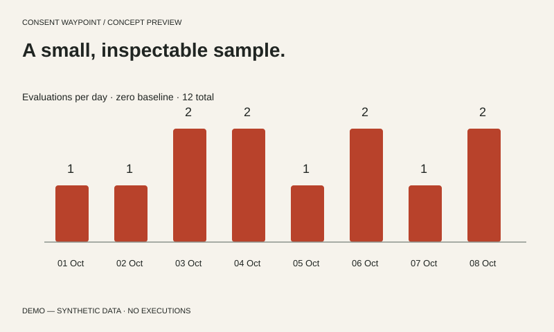
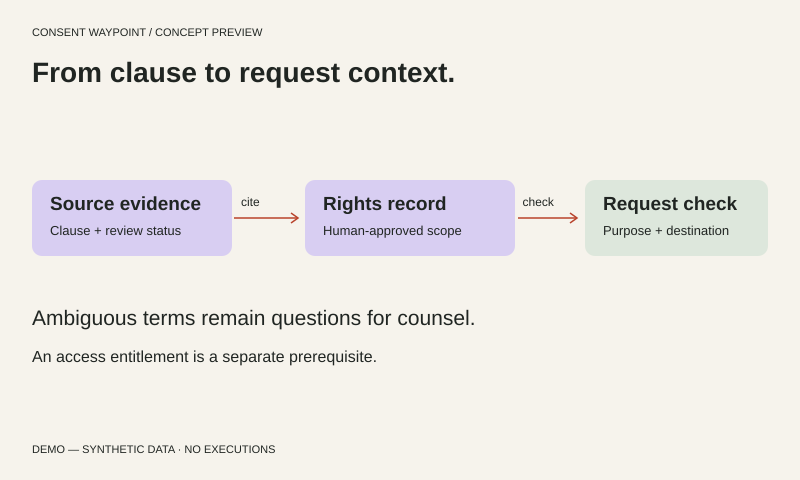
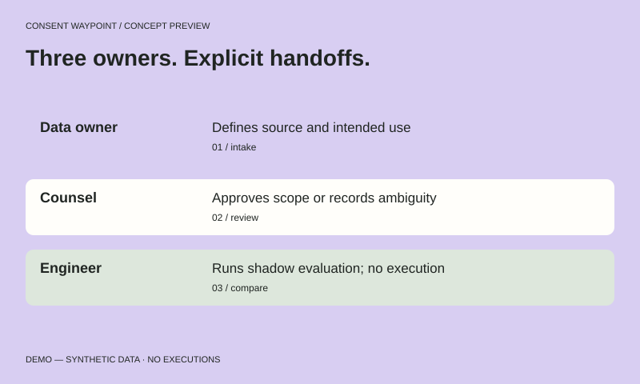
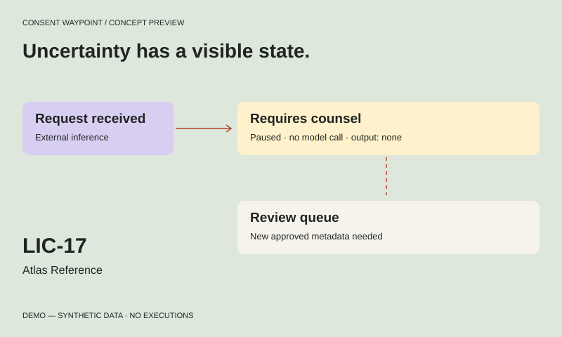
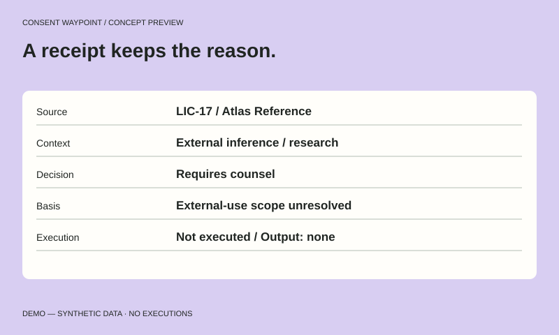
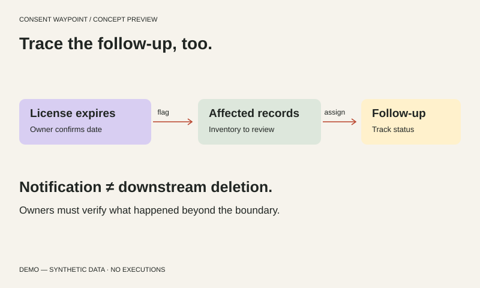

Charts / 01SVG ↓


Swipe or use arrow keys to inspect the full figure →
Three outcomes. Twelve evaluations.
Allow: 4. Requires counsel: 4. Deny: 4. Counts of synthetic evaluations, not executed requests.
Evidence in Motion / Visual library 2.1
Images with texture. Charts with context.
Diagrams that explain the next step.
01 / Evidence you can inspect
Original, editable assets for the website and product story. All operational examples are fictional.

Swipe or use arrow keys to inspect the full figure →
Allow: 4. Requires counsel: 4. Deny: 4. Counts of synthetic evaluations, not executed requests.

Swipe or use arrow keys to inspect the full figure →
EV-03: 5 days. EV-05: 4 days. EV-08: 2 days. EV-11: 0 days. Calendar age, not service performance.

Swipe or use arrow keys to inspect the full figure →
01 Oct:1; 02 Oct:1; 03 Oct:2; 04 Oct:2; 05 Oct:1; 06 Oct:2; 07 Oct:1; 08 Oct:2. Synthetic event counts.

Swipe or use arrow keys to inspect the full figure →
Proposed architecture: source evidence is cited by a human-approved rights record. A request check compares context to that record. Access entitlement is separate.

Swipe or use arrow keys to inspect the full figure →
Workflow illustration: data owner defines use, counsel reviews terms, engineer runs a shadow evaluation. Handoffs do not imply automatic approval.

Swipe or use arrow keys to inspect the full figure →
LIC-17 external inference routes to requires counsel. It stays paused with no output. Review queue needs approved metadata; approval is not assumed.

Swipe or use arrow keys to inspect the full figure →
Anatomy of a simulated decision receipt: source, context, decision, basis and execution. No output provenance is invented.

Swipe or use arrow keys to inspect the full figure →
Proposed expiry coordination: flag affected records, assign follow-up, verify outcomes. Does not promise downstream deletion.
Swipe or use arrow keys to inspect the full figure →
| Use | Context | Outcome | Condition |
|---|---|---|---|
| Read | Internal research | Allow | Approved scope only |
| Embedding | Approved internal index | Allow | Index restriction applies |
| Inference | External model | Requires counsel | External terms unresolved |
| Retention | 90-day request | Requires counsel | Duration not approved |
| Redistribution | External recipient | Deny | Prohibited in fixture |
Swipe or use arrow keys to inspect the full figure →
| Field | Previous sample | Current sample | Meaning |
|---|---|---|---|
| Source ID | LIC-17 | LIC-17 | Unchanged |
| External inference | Not reviewed | Ambiguity logged | Still requires counsel |
| Review owner | Unassigned | Mira Lane (fictional) | Assigned, not approved |
| Execution | None | None | No external call |
Swipe or use arrow keys to inspect the full figure →
| ID | Source | Use | Destination | Outcome | Date |
|---|---|---|---|---|---|
| EV-01 | LIC-17 | Read | Internal | Allow | 2026-10-01 |
| EV-02 | LIC-17 | Embed | Internal | Allow | 2026-10-02 |
| EV-03 | LIC-17 | Inference | External | Requires counsel | 2026-10-03 |
| EV-04 | LIC-17 | Redistribute | External | Deny | 2026-10-03 |
| EV-05 | LIC-22 | Read | Internal | Requires counsel | 2026-10-04 |
| EV-06 | LIC-31 | Read | Internal | Deny | 2026-10-04 |
| EV-07 | LIC-17 | Read | Internal | Allow | 2026-10-05 |
| EV-08 | LIC-22 | Inference | External | Requires counsel | 2026-10-06 |
| EV-09 | LIC-31 | Embed | Internal | Deny | 2026-10-06 |
| EV-10 | LIC-17 | Embed | Internal | Allow | 2026-10-07 |
| EV-11 | LIC-17 | Inference | External | Requires counsel | 2026-10-08 |
| EV-12 | LIC-31 | Read | Internal | Deny | 2026-10-08 |
02 / Linked data
Filter the independent 12-event sample. An allowed evaluation does not mean a request ran.
03 / Material studies
Tactile paper, framing apertures and deliberate interruptions. Original generated art for editorial sections; never presented as product captures.
For source families, registry and onboarding.
Download image ↓For purpose, destination and review boundaries.
Download image ↓